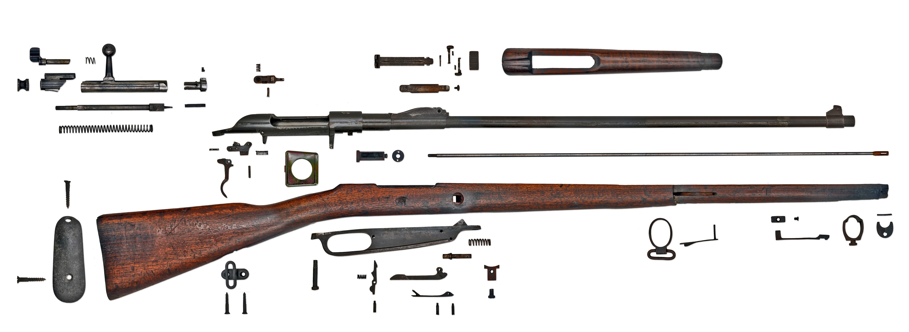

Hanyang 88

Assemble/Disassemble
National Origin: China
Cartridge: 7.92x57mm Mauser
Feed System: 5-round internal magazine w/ stripper clips
Action: Bolt action, cock-on-opening
Directly patterned after the German Model 1888 commission rifle, the Hanyang 88 served through both of China's wars against Japan, as well as through China's numerous internal conflicts. Although long outdated and obsolete by the 1930s, and supplanted by the Chiang Kai-Shek rifle (a copy of the German Mauser 98) the Hanyang 88 proved a solid and reliable weapon. Its last confirmed combat use was during the Korean War, though it is possible that Chinese militia units continued to use it for some time afterward.
 Back
Back